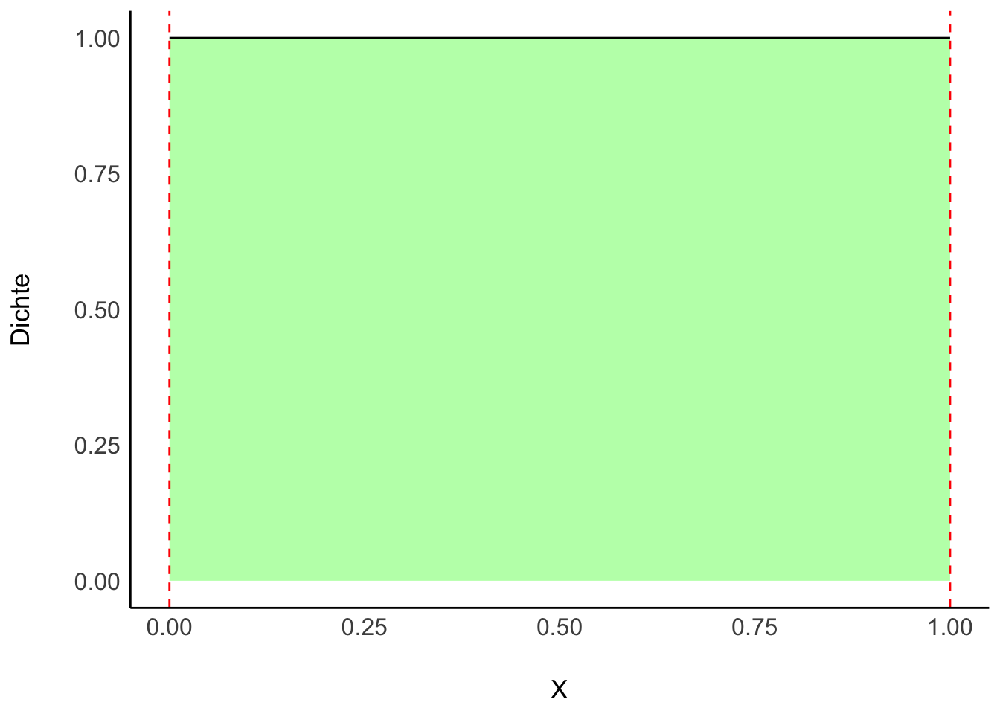

flowchart LR X --> Y

Bekanntlich segelte Kolumbus 1492 los, und entdeckte Amerika. Das war aber ein glücklicher Zufall, denn auf seinem Globus existierte Amerika gar nicht. Vielleicht sah sein Globus so aus wie der von Behaim, s. Abb Figure 5.1.

Die kleine Welt des Modells entsprach hier nicht der großen Welt, der echten Erdkugel.
Das ist ein Beispiel, das zeigt, wie Modellieren schiefgehen kann. Es ist aber auch ein Beispiel für, sagen wir, die Komplexität wissenschaftlicher (und sonstiger) Erkenntnis. Einfach gesagt: Glück gehört halt auch dazu.
| Kleine Welt | Große Welt |
|---|---|
| Die Welt, wie sie der Golem sieht | Die Welt, wie sie in Wirklichkeit ist |
| ist das Modell, aber nicht (zwangsläufig) die Wirklichkeit | entspricht nicht (zwangsläufig) dem Modell |
| Verwenden wir beim Modellieren | Ist das, was wir modellieren |
Behaims Globus ist nicht gleich der Erde. Die kleine Welt ist nicht die große Welt.
Was in der kleinen Welt funktioniert, muss nicht in der großen Welt funktionieren. Modelle zeigen immer nur die kleine Welt: Vorsicht vor schnellen Schlüssen und vermeintlicher Gewissheit.
üèã Nennen Sie ein Beispiel, in dem ein Modell nicht (exakt) der Wirklichkeit entspricht!

Der Golem von Prag, eine vom Menschen geschaffene Kreatur gewaltiger Kraft, die Befehle wörtlich ausführt.
Bei kluger Führung kann ein Golem Nützliches vollbringen.
Bei unüberlegter Verwendung wird er jedoch großen Schaden anrichten.
Golem
Modell
flowchart LR X --> Y
Wir bauen Golems.

üèã Bayes-Inferenz √§hnelt dem Lernen von Menschen. Geben Sie ein Beispiel von Lernen bei Menschen, das oben dargestelltem Prozess √§hnelt!
Unsere Hypothese bzw. unsere Forschungsfrage lautet, mit welchem Anteil die Erde wohl mit Wasser bedeckt ist?

Quelle CC 4.0 BY-NC
Sie werden einen Globus-Ball in die Luft und fangen in wieder auf. Sie notieren dann, ob die Stelle unter Ihrem Zeigefinger Wasser zeigt (W) oder Land (L). Den Versuch wiederholen Sie 9 Mal.
So sah mein Ergebnis aus:
\[W \quad L \quad W \quad W \quad W \quad L \quad W \quad L \quad W\]
üèãÔ∏èÔ∏è Besorgen Sie sich einen Globus (zur Not eine M√ºnze) und stellen Sie den Versuch nach!
Der physikalische Prozess, der zur Entstehung der Daten führt, nennt man den den datengenierende Prozess.
In diesem Fall kann man ihn so beschreiben:
üèã Welche Annahmen w√ºrden Sie √§ndern? Welche k√∂nnte man wegnehmen? Welche hinzuf√ºgen? Was w√§ren die Konsequenzen?
Für jede Hypothese haben wir ein Vorab-Wissen, das die jeweilige Plausibilität der Hypothese angibt: Priori-Verteilung.
Für jede Hypothese (d.h. jeden Parameterwert \(p\)) möchten wir wie wahrscheinlich die Daten sind (unter der Annahme, dass die Hypothese richtig ist). Das gibt uns den Likelihood.
Dann gewichten wir den Likelihood mit dem Vorabwissen, so dass wir die Posteriori-Verteilung1 bekommen.

Wir nehmen an, dass die Daten unabhängig voneinander entstehen und sich der Parameterwert nicht zwischenzeitlich ändert2.
Dann kann man die Wahrscheinlichkeit (\(Pr\)), \(W\) mal Wasser und \(L\) mal Land zu beobachten, wenn die Wahrscheinlichkeit für Wasser \(p\) beträgt, mit der Binomialverteilung berechnen.
Die Binomialverteilung zeigt die Verteilung der Häufigkeit (Wahrscheinlichkeit) der Ereignisse (z.B. 2 Mal Kopf) beim wiederholten Münzwurf (und allen vergleichbaren Zufallsexperimenten): “Münzwurfverteilung”
\[Pr(W,L|p) = \frac{(W+L)!}{W!L!}p^W(1-p)^L\]
Was ist der Anteil der gültigen Pfade (Wahrscheinlichkeit), um 6 mal \(W\) bei \(N=W+L=9\) Würfen zu bekommen, wenn wir von \(p=1/2\) ausgehen?
dbinom(x = 6, size = 9, prob = 1/2)[1] 0.1640625Was ist die Wahrscheinlichkeit für \(W=9\) bei \(N=9\) und \(p=1/2\)?
dbinom(x = 9, size = 9, prob = 1/2)[1] 0.001953125Ei Professi stellt einen Klausur mit 20 Richtig-Falsch-Fragen. Wie groß ist die Wahrscheinlichkeit, durch bloßes Münze werfen genau 15 Fragen richtig zu raten?3.
dbinom(x = 15, size = 20, prob = .5)[1] 0.01478577Was ist die Wahrscheinlichkeit bei 3 Münzwürfen (genau) 3 Treffer (Kopf) zu erzielen?
dbinom(3, 3, 1/2)[1] 0.125Wir fassen das Globusmodell so zusammen:
\[W \sim \text{Bin}(N,p),\]
Lies: “W ist binomial verteilt mit den Parametern \(N\) und \(p\)”. \(N\) gibt die Anzahl der Globuswürfe an: \(N=W+L\).
Unser Vorab-Wissen zu \(p\) sei, dass uns alle Werte gleich plausibel erscheinen (“uniform”):
\[p \sim \text{Unif}(0,1).\]
Lies: “\(p\) ist gleich (uniform) verteilt mit der Untergrenze 0 und der Obergrenze 1”.
Abb. Figure 5.2 zeigt die Binomialverteilung.

\(N=9, p = 1/2\)
Abb. Figure 5.3 zeigt ein Beispiel für eine Gleichverteilung (uniform distribution).

\(Min = 0, Max = 1\)
üèãÔ∏èÔ∏è Was f√§llt Ihnen bei der Binomialverteilung auf? Ist sie symmetrisch? Ver√§ndert sich die Wahrscheinlichkeit linear? Was f√§llt Ihnen bei der Gleichverteilung auf?
Die Wahrscheinlichkeit für Regen und kalt ist gleich der Wahrscheinlihckeit von Regen, gegeben kalt mal der Wahrscheinlicht von kalt. Entsprechend gilt: Die Wahrscheinlichkeit von \(W\), \(L\) und \(p\) ist das Produkt von \(Pr(W,L|p)\) und der Prior-Wahrscheinlichkeit \(Pr(p)\):
\[Pr(W,L,p) = Pr(W,L|p) \cdot Pr(p)\]
Genauso gilt: Die Wahrscheinlichkeit von Regen und kalt ist gleich der Wahrscheinlichkeit kalt, wenn’s regnet mal der Wahrscheinlichkeit von Regen:
\[Pr(W,L,p) = Pr(p|W,L) \cdot Pr(W, L)\]
Wir setzen die letzten beiden Gleichungen gleich:
\[Pr(W,L|p) \cdot Pr(p) = Pr(p|W,L) \cdot (W,L)\]
Und lösen auf nach der Posteriori-Wahrscheinlichkeit, \(Pr(p|W,L)\):
\[Pr(p|W,L) = \frac{Pr(W,L|p) Pr(p)}{Pr(W,L)}\]
\(Pr(W,L)\) nennt man die mittlere Wahrscheinlichkeit der Daten oder Evidenz. Die Evidenz berechnet sich als Mittelwert der Likelihoods über alle Werte von \(p\). Die Aufgabe dieser Größe ist nur dafür zu sorgen, dass insgesamt Werte zwischen 0 und 1 herauskommen.
\[Pr(H|D) = \frac{Pr(D|H) Pr(H)}{Pr(D)}\]
Bestandteile:
Posteriori-Wahrscheinlichkeit: \(Pr_{Post} := Pr(H|D)\)
Likelihood: \(L := Pr(D|H)\)
Priori-Wahrscheinlichkeit: \(Pr_{Priori} := Pr(H)\)
Evidenz: \(E := Pr(D)\)
Bayes’ Theorem gibt die \(Pr_{Post}\) an, wenn man die Gleichung mit der \(Pr_{Priori}\) und dem \(L\) füttert.
Bayes’ Theorem wird häufig verwendet, um die \(Pr_{Post}\) zu quantifizieren.
Die \(Pr_{Post}\) ist proportional zu \(L \times Pr_{Priori}\).
\[\text{Posteriori} = \frac{\text{Likelihood} \times \text{Priori}}{\text{Evidenz}}\]


Unser Golem (das Modell) lernt. Ob das Modell nützlich ist (präzise Vorhersagen liefert), steht auf einem anderen Blatt.
Die Methode Gitter-Annäherung nennt man auch Grid Approximation*.
d <-
tibble(
# definiere das Gitter:
p_Gitter = seq(from = 0, to = 1, length.out = 10),
# bestimme den Priori-Wert:
Priori = 1) %>%
mutate(
# berechne Likelihood für jeden Gitterwert:
Likelihood = dbinom(6, size = 9, prob = p_Gitter),
# berechen unstand. Posteriori-Werte:
unstd_Post = Likelihood * Priori,
# berechne stand. Posteriori-Werte (summiert zu 1):
Post = unstd_Post / sum(unstd_Post)) So sehen unsere “Gitterdaten” aus:
# | echo: false
d %>%
knitr::kable(digits = 2)| p_Gitter | Priori | Likelihood | unstd_Post | Post |
|---|---|---|---|---|
| 0.00 | 1 | 0.00 | 0.00 | 0.00 |
| 0.11 | 1 | 0.00 | 0.00 | 0.00 |
| 0.22 | 1 | 0.00 | 0.00 | 0.01 |
| 0.33 | 1 | 0.03 | 0.03 | 0.04 |
| 0.44 | 1 | 0.11 | 0.11 | 0.12 |
| 0.56 | 1 | 0.22 | 0.22 | 0.24 |
| 0.67 | 1 | 0.27 | 0.27 | 0.30 |
| 0.78 | 1 | 0.20 | 0.20 | 0.23 |
| 0.89 | 1 | 0.06 | 0.06 | 0.06 |
| 1.00 | 1 | 0.00 | 0.00 | 0.00 |
üèãÔ∏è Was wohl mit Post passiert, wenn wir Priori √§ndern?
Die Posteriori-Verteilung (Kurz: “Post-Verteilung”), \(Pr_{Post}\), zeigt, wie plausibel wir jeden Wert von \(p\) halten.

Mehr Gitterwerte glätten die Annäherung.
Je größer die Stichprobe (\(N\)), desto zuverlässiger wird unsere Berechnung.
Die Post-Verteilung ist sowas wie das Ziel all Ihrer Träume (falls Sie es noch nicht gewusst haben): Aus der Post-Verteilung können Sie ablesen, wie wahrscheinlich Ihre Hypothese (Ihr Lieblings-Parameterwert) ist. Und noch einiges mehr, aber das ist Thema des nächsten Kapitels.
In unserem Modell haben wir Annahmen zu \(Pr_{Priori}\) und \(L\) getroffen.
Auf dieser Basis hat der Golem sein Wissen geupdated zu \(Pr_{Post}\).
Mit der Gitter-Methode haben wir viele Hypothesen (Parameterwerte) untersucht und jeweils die \(Pr_{Post}\) berechnet.
Unser Modell bildet die kleine Welt ab; ob es in der großen Welt nützlich ist, steht auf einem anderen Blatt.
üèãÔ∏è Wenn Sie auf einen Prozentwert f√ºr \(W\) tippen m√ºssten, welchen w√ºrden Sie nehmen, laut dem Modell (und gegeben der Daten)?